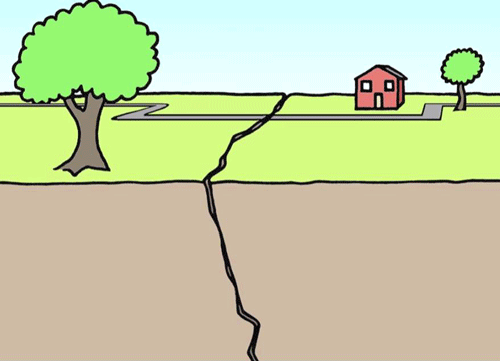

Ani depremler, birdenbire meydana gelen ve hızlı bir şekilde enerji salınımıyla karakterize olan depremlerdir. Bu depremler genellikle fay hattı kırılmaları sonucunda ortaya çıkar.
Sürüklenme depremleri, genellikle yavaş ve sürekli bir hareketle karakterizedir. İki fay hattının birbirine sürtünerek kayması sonucu ortaya çıkar. Bu tür depremler genellikle daha uzun sürer ve daha az enerji salınır.
Kırılma depremleri, fay hatlarındaki gerilimlerin birikmesi ve ani bir şekilde boşalması sonucu meydana gelir. Bu tür depremler genellikle büyük enerji salınımıyla karakterizedir.
Faylanma depremleri, fay hatlarında gerçekleşen hareketler sonucu ortaya çıkar. Fay hattının bir tarafı diğerine göre kayar, kırılır veya yükselir.
Volkanik depremler, volkanik aktiviteyle ilişkili olarak meydana gelir. Magmanın hareketi veya yanardağ patlamaları sonucu oluşabilir.
Yüzey dalgaları, depremin yüzeydeki etkilerini taşıyan dalgaları ifade eder. Bu dalgalar genellikle daha düşük frekanslara sahiptir ve daha büyük zararlar meydana getirebilir.
Sıvılaşma depremleri, zeminin su içeriği ve yapısal özellikleri nedeniyle yer kabuğunda meydana gelen titreşimler sonucu ortaya çıkar. Bu durumda, toprak su içeriğini kaybeder ve sıvı kıvamına dönüşür.
Yer kabuğu hareketi, levha tektoniği teorisiyle ilişkili olarak meydana gelen depremlerdir. Levhaların birbirine göre hareket etmesi sonucunda deprem oluşabilir.
Yüksek frekanslı depremler, daha yüksek frekans aralığındaki titreşimlerle karakterizedir. Bu tür depremler genellikle daha küçük çapta olur ve kısa süreli zararlara neden olabilir.
2023 Hakları Saklıdır. Tüm Hakları Bana Aittir.